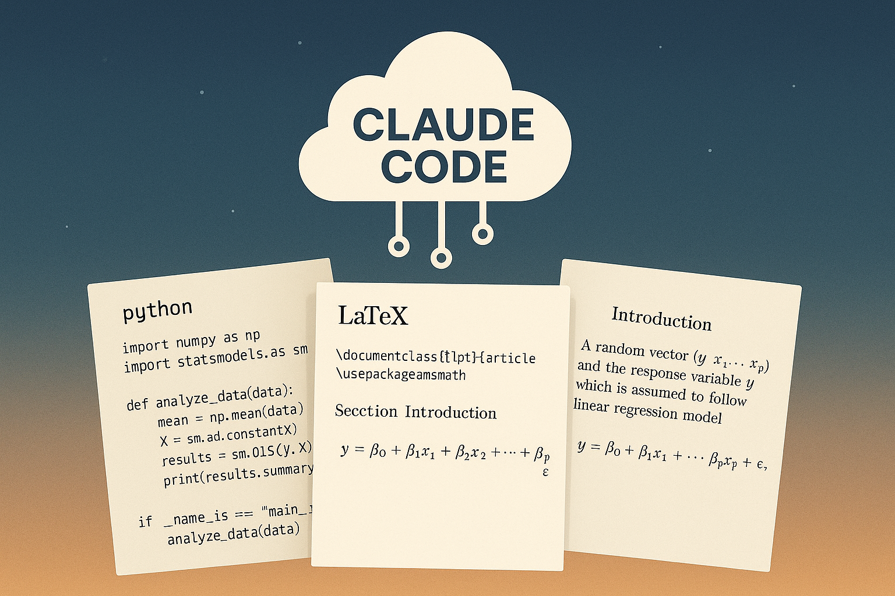

The Ultimate Tech Stack for Researchers

Today, I’m departing from my usual topic of teaching and instead am going to discuss tools for researchers. I’m going way out on a skinny limb by claiming I know the best set of tools now available. But, I’m pretty sure that I do, and I want to share the information. Of course, I should emphasize “now available,” because, the way things are going, there may be tools six months from now that are an order of magnitude better.
Here’s the setup for Windows users. Mac and Linux users can skip WSL. You need:
- Windows Subsystem for Linux (WSL)
- VS Code based IDE (VS Code, Cursor, or Windsurf)
- Claude Pro account
- GitHub account
- Overleaf Pro account
What can you do with this setup? Of course, you can use Python for data handling, statistics, machine learning, visualization, and scientific computing. You can also write and edit papers (in LaTeX) within the same application in which you write and run Python code, which I find very efficient. You can share code with co-authors using GitHub, and you can link a Github repository to Overleaf to create and sync an Overleaf project, in case you or your co-authors sometimes want to write in Overleaf. What make this the ultimate stack is that Claude Code can manage everything.
How do you start? Google and click through the installation process to install WSL like any other Windows program. Do the same for the VS Code based IDE.1 Open the IDE and point-and-click to install the Python, Jupyter, Claude Code, Latex Workshop, WSL, and Quarto extensions.
When you’re ready to work, use CTRL-SHFT-P to open the command palette in the IDE and enter “Remote-WSL: Connect to WSL” to run it inside WSL. WSL provides a Linux environment on a Windows PC. The Windows and Linux environments share the same file system: you can access your Windows files within WSL and vice versa. Remote-WSL connects to your Linux environment much the same as Remote-SSH can connect your IDE to a remote Linux environment, for example, a university server. You can create a working directory inside your Linux environment or you can access Windows folders using /mnt/c/path_to_folder, which means “mount your Windows C drive in the Linux environment.”
Open a file or create a new file, and you will see the Claude icon appear in the top ribbon. Click it and Claude Code will open in a new panel. Claude Code is an agentic AI tool that can create and edit files, create, edit, and run Python scripts and Jupyter notebooks, search the web, download files, and run shell commands. Ask Claude Code to install Python, Quarto, Tex Live, Git, and the Git and GitHub command line tools. It can do all of that by executing shell commands.
I think you will want to create a virtual environment for working in Python so as not to conflict with Python and Python packages built into WSL. Ask Claude Code to do it for you and to activate the new environment. Then ask it to install whatever Python packages you want: numpy, pandas, jupyter, matplotlib, etc.2 Now, you’re ready to work. You can open a Jupyter notebook in the IDE or a blank Python script and start coding. Or, you can ask Claude Code to create the notebook or script for you and to start writing code. When you come back to work at a later time, connect to WSL, open the same folder, and ask Claude Code to activate the virtual environment.
You can edit, compile, and preview LaTeX documents all in the IDE. If you find that you are missing packages you need, you can ask Claude Code to install them. You can even ask Claude Code to compile your LaTeX document. It will then compile, install any missing packages and recompile (asking permission as it does so). You can also ask Claude Code to read your LaTeX document and suggest edits.
Why Quarto? Quarto is a document preparation system that can create PDF, HTML, and Word output files from a single source file. It is optional for this tech stack, but it is extremely useful. In addition to creating documents, it can also create websites (e.g., this website), books (e.g., this online book), and HTML slide decks (e.g., this slide deck). It is in fact creating this blog post. It is based on the Markdown language, which is a simple and easy-to-learn language that supports LaTeX math. Even when I want to create a LaTeX document, I often write the first draft in Quarto and then ask Claude Code to translate it to LaTeX. It is just faster to write in Markdown than in LaTeX. For example, the Markdown version of \begin{itemize}\item is a simple -.
Setting up Git and GitHub for the first time and then learning to use them used to be a pain. But now Claude Code can do it for you. It can install the command line tools it needs and then use them to initiate, commit, and push. All you need to do is to set up a (free) GitHub account and log in at the command line when Claude Code tells you to do so. If you’re working with a co-author, just ask Claude Code to pull the repository from GitHub and then push your changes.
Important: Claude Code will almost certainly create a generic python .gitignore file for you when it first creates a repository. This specifies folders, file types, and filenames that will not be tracked in Git and therefore will not be pushed to GitHub. Ask Claude Code to include csv files, Excel files, Stata files, or any other data file types you use in the .gitignore. You do not want to be pushing your data files to GitHub and Overleaf. In fact, trying to push a large data file (> 100 MB) to GitHub will generate an error that is difficult to recover from without starting all over.
To add Overleaf to your stack, log in to Overleaf, select a project or create a new one, and then from the Menu, select “Github Sync”. You’ll be prompted to authorize GitHub integration the first time you do this. After you’ve done so, you can choose “Github Sync” for any project and you’ll be prompted to select or create a GitHub repository to sync with. It is the same process as syncing with Dropbox, though you have to manually go to “Github Sync” each time you want to push Overleaf changes to GitHub or pull GitHub changes to Overleaf.
A bonus feature of using Github is that you can use Github Pages for free hosting of the website you create in Quarto. Just ask Claude Code how to do it. You can even create online apps (as described here) by linking a GitHub repository containing an app.py file to Koyeb. All you need to do is to create a Koyeb account and then - guess what - ask Claude Code to do everything else!
All of the instructions above could seem like too much to bother with, but remember that you can ask Claude Code for advice every step of the way. Just tell it what you want to do, and it will guide you through the process, doing much of the work on its own if you ask it to.
First published on finance-with-ai.org
Also on substack at kerryback.substack.com
Footnotes
VS Code is an open source IDE (integrated development environment) developed by Microsoft. Cursor and Windsurf are variations (forks) of VS Code designed to provide more efficient use of AI. I’m currently using Windsurf, which I like a bit better than Cursor, but they’re close, and VS Code with the GitHub Copilot extension is also okay.↩︎
If you’re a corporate finance person, I recommend the linearmodels package written by Kevin Sheppard, or you could try pystata, which is a Python wrapper for Stata.↩︎